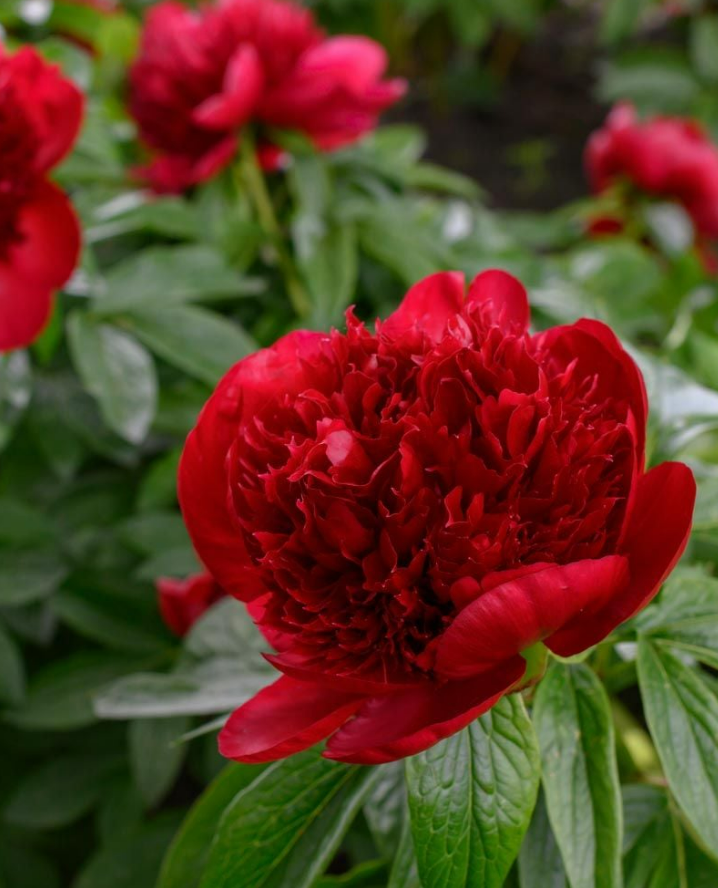
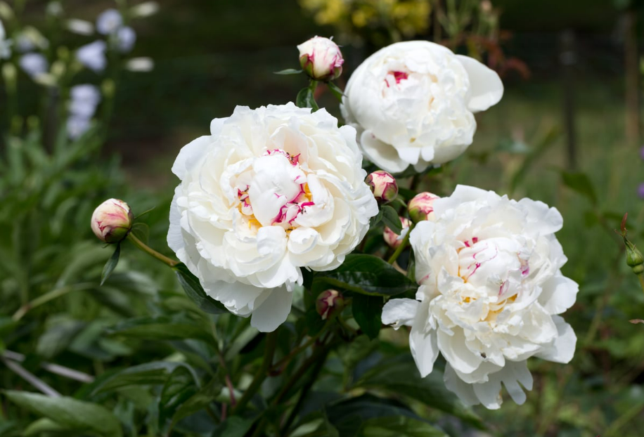
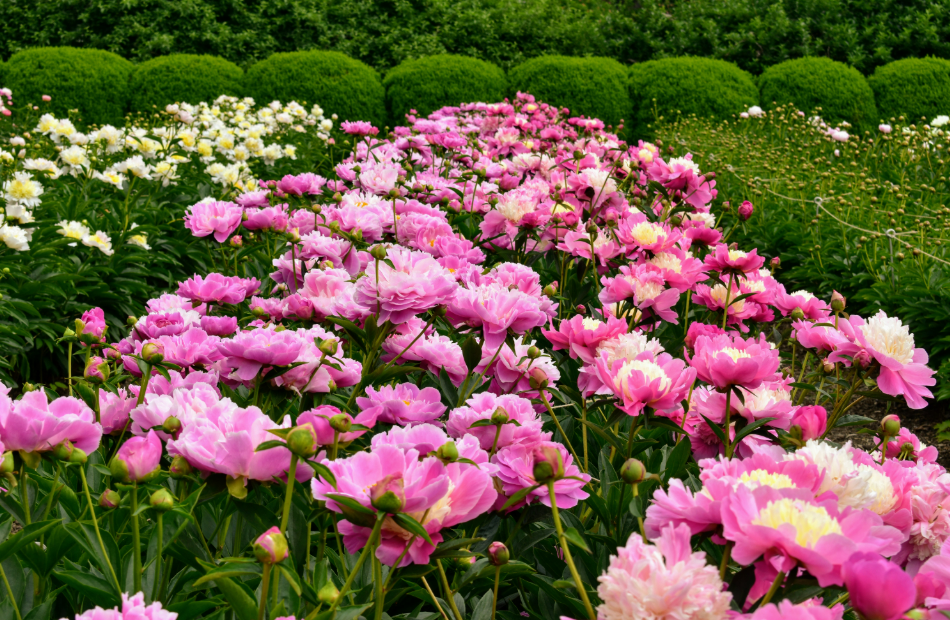

Discover the Beauty of Peonies
Peonies are one of the most beloved flowers in the world, known for their lush, voluminous blooms and vibrant colors. They are often associated with romance, prosperity, and good fortune.
Peonies symbolize love, honor, happiness, and beauty, and their fragrant blooms are treasured in gardens and floral arrangements worldwide. Explore our site to learn more about these stunning flowers!
Explore Our Peony Gallery
Take a look at some of the most breathtaking peony varieties:


